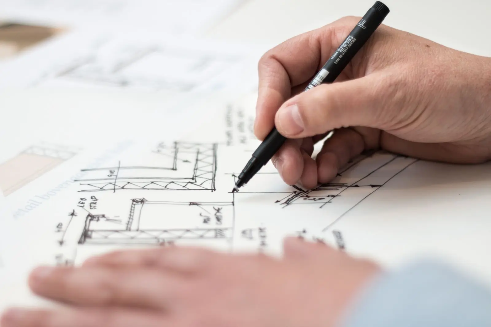
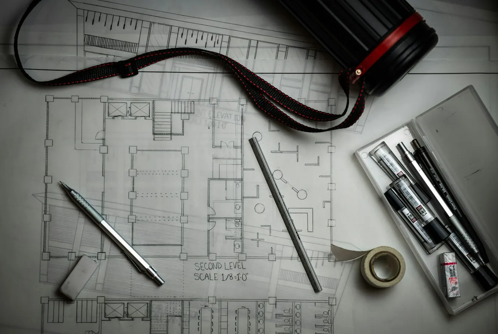
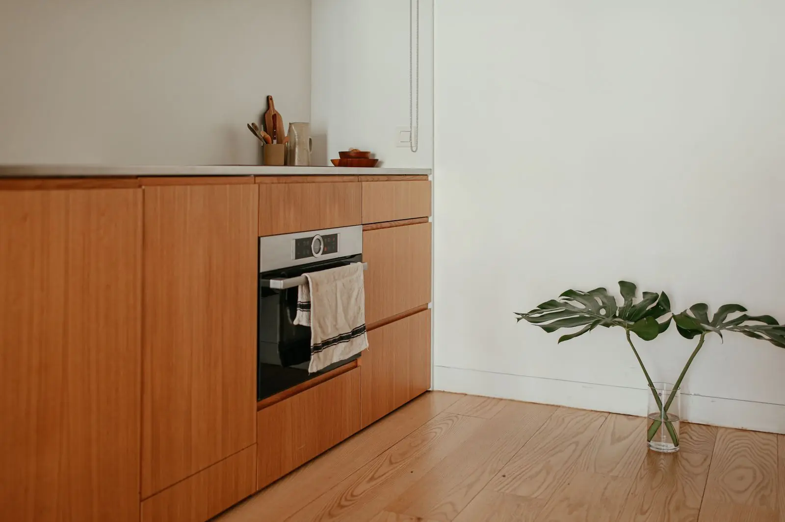

Cada etapa termina com uma entrega que você aprova. Assim nenhuma decisão importante fica para a obra, quando mudar custa caro.
Prazos típicos de exemplo; o cronograma real depende do tamanho e da complexidade do projeto.

Etapa 01 de 05 · duração típica: 2 a 4 semanas
Estudo preliminar
Conversamos sobre a rotina, o orçamento e o que você imagina. Visitamos o terreno ou o imóvel, levantamos medidas e regras, e apresentamos as primeiras ideias de implantação e de layout.
O que fazemos
Reunião de briefing e programa de necessidades
Levantamento do terreno ou do imóvel
Estudo de implantação e de layout em duas opções
O que você recebe
Programa de necessidades assinado
Estudo preliminar em planta
Faixa inicial de custo da obra
Etapa 02 de 05 · duração típica: 3 a 6 semanas
Anteprojeto
A opção escolhida ganha forma: plantas, cortes, fachadas e a volumetria em 3D. Definimos os materiais principais e revisamos a estimativa de custo com base no projeto.
O que fazemos
Plantas, cortes e fachadas
Maquete 3D para girar no celular
Materiais principais e referências
O que você recebe
Anteprojeto aprovado
Estimativa de custo revisada
Pedido de aprovação na prefeitura e no condomínio

Etapa 03 de 05 · duração típica: 6 a 10 semanas
Projeto executivo
Todos os desenhos para construir: plantas cotadas, cortes, detalhes construtivos e especificações. Compatibilizamos com os projetos de estrutura, elétrica, hidráulica e ar-condicionado.
O que fazemos
Plantas cotadas e detalhes construtivos
Compatibilização dos projetos complementares
Caderno de especificações
O que você recebe
Projeto executivo completo
Orçamento da obra item a item
Cronograma físico-financeiro

Etapa 04 de 05 · duração típica: 3 a 5 semanas
Detalhamento
Marcenaria, iluminação e paginação de pisos e revestimentos desenhadas peça por peça. É aqui que o interior fica preciso: cada armário, cada ponto de luz, cada recorte de pedra.
O que fazemos
Projeto executivo de marcenaria
Projeto de iluminação com cenas
Paginação de pisos, paredes e bancadas
O que você recebe
Pranchas de detalhamento
Lista de compras com fornecedores
Prancha de materiais com amostras físicas
Etapa 05 de 05 · duração típica: conforme o projeto
Execução
A obra é conduzida pela mesma equipe do projeto. Fazemos as compras com você, coordenamos as equipes e visitamos a obra toda semana, com relatório de fotos e decisões pendentes.
O que fazemos
Gestão de compras e fornecedores
Visita técnica semanal da arquiteta e do engenheiro
Relatório semanal com fotos e cronograma
O que você recebe
Obra entregue e vistoriada
Projeto como construído
Manual do espaço e garantias
Contratação
Como contratar
Você pode contratar só o projeto ou projeto e execução. Os valores abaixo são exemplos para mostrar o formato.
Opção A
Projeto de arquitetura
Etapas 01 a 03. Honorários por metro quadrado, divididos por etapa entregue.
Opção B
Projeto completo
Arquitetura e interiores, etapas 01 a 04. Inclui marcenaria, iluminação e paginação detalhadas.
Opção C
Projeto e execução
Etapas 01 a 05 com a mesma equipe. Taxa de administração sobre o custo real da obra, com compras abertas.
Conte o que você quer construir ou reformar. Respondemos em até dois dias úteis com os próximos passos e uma primeira conversa com a arquiteta responsável.